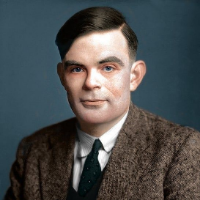

Daftar Isi
- Beranda
- Pythagoras
- Euclid
- Archimdes
- Leonardo Fibonacci
- Isaac Newton
- Leonhard Euler
- Carl Friedrich Gauss
- Georg Cantor
- Alan Turing
Hubungi Admin


JAM
lainnya
10 tokoh berpengaruh dalam matematika
Siapa itu Alan Turing?

Sejarah Hidup:
Alan Turing (lahir pada 23 Juni 1912 – meninggal pada 7 Juni 1954) adalah seorang ilmuwan komputer, matematikawan, dan logikawan asal Inggris. Ia dikenal sebagai salah satu tokoh paling berpengaruh dalam perkembangan komputer dan kecerdasan buatan. Turing lahir di London dan menunjukkan bakat matematika yang luar biasa sejak usia dini. Ia belajar di Universitas Cambridge dan kemudian bekerja dalam berbagai proyek ilmiah selama dan setelah Perang Dunia II.
Pemikiran dan Kontribusi:
Mesin Turing: Salah satu kontribusi terbesar Turing adalah pengembangan konsep Mesin Turing, yang sering dianggap sebagai model teoritis untuk komputer modern. Mesin Turing adalah model abstrak yang menggambarkan bagaimana komputasi dapat dilakukan melalui serangkaian langkah-langkah mekanis pada suatu pita tak terbatas. Konsep ini membantu mendefinisikan apa yang bisa dan tidak bisa dihitung oleh komputer.
Pemecahan Masalah Entscheidungsproblem: Turing mengajukan konsep Mesin Turing untuk membuktikan bahwa tidak ada algoritma yang dapat menghitung solusi untuk setiap masalah matematika. Ini membantah "Entscheidungsproblem" yang diajukan oleh David Hilbert, yang bertanya apakah setiap permasalahan matematika dapat dijawab atau tidak.
Konsep Keberhitungan Universal: Turing juga mengembangkan konsep mesin universal, yang merupakan mesin Turing yang dapat mensimulasikan tindakan-tindakan mesin Turing lainnya. Ini adalah konsep dasar dari komputer modern, di mana suatu komputer dapat diprogram untuk melakukan berbagai tugas dengan mengubah program yang dijalankannya.
Perang Dunia II dan Kode Enigma: Selama Perang Dunia II, Turing berkontribusi pada dekripsi kode Enigma milik Jerman, yang membantu Sekutu mendapatkan informasi rahasia yang sangat penting. Turing dan timnya berhasil memecahkan kode Enigma, yang dianggap telah mempersingkat perang.
Karya dan Pengaruh:
Alan Turing adalah salah satu tokoh paling berpengaruh dalam perkembangan ilmu komputer dan matematika. Pemikirannya tidak hanya membentuk dasar teoritis komputasi modern, tetapi juga memberikan landasan bagi kecerdasan buatan dan pemahaman tentang apa yang dapat dicapai oleh mesin berpikir. Beberapa dampak penting dari karya dan pemikirannya meliputi:
Pemikiran Komputasi Universal: Konsep Turing tentang mesin universal menjadi dasar dari pemahaman kita tentang komputer modern. Ide bahwa satu mesin dapat mensimulasikan berbagai tugas membantu membentuk fondasi pengembangan perangkat lunak dan komputasi umum.
Keberhasilan dalam Perang Dunia II: Pemecahan kode Enigma oleh Turing berkontribusi besar terhadap kemenangan Sekutu dalam Perang Dunia II. Kontribusinya membantu memecahkan komunikasi rahasia Jerman dan memberikan informasi penting kepada Sekutu.
Kontribusi terhadap Teori Bahasa dan Otomata: Pemikiran Turing tentang mesin abstrak dan komputasi memberikan kontribusi signifikan terhadap teori bahasa formal dan otomata, yang menjadi dasar untuk pengembangan bahasa pemrograman dan kompilasi.
Kecerdasan Buatan (AI): Turing juga mengusulkan "Ujian Turing," yang merupakan percobaan untuk menilai apakah suatu mesin memiliki kecerdasan yang setara dengan manusia. Konsep ini terus mempengaruhi perkembangan dan diskusi di bidang kecerdasan buatan.
Sayangnya, meskipun prestasinya yang luar biasa, Turing menghadapi banyak kesulitan pribadi dan profesional selama hidupnya. Ia ditangkap dan dihukum karena orientasinya sebagai seorang gay, yang pada akhirnya mengakibatkan depresi dan tragis meninggalnya pada usia yang masih muda. Pada tahun 2013, Pemerintah Inggris mengumumkan pengampunan resmi bagi Turing atas tuduhan homoseksualnya.